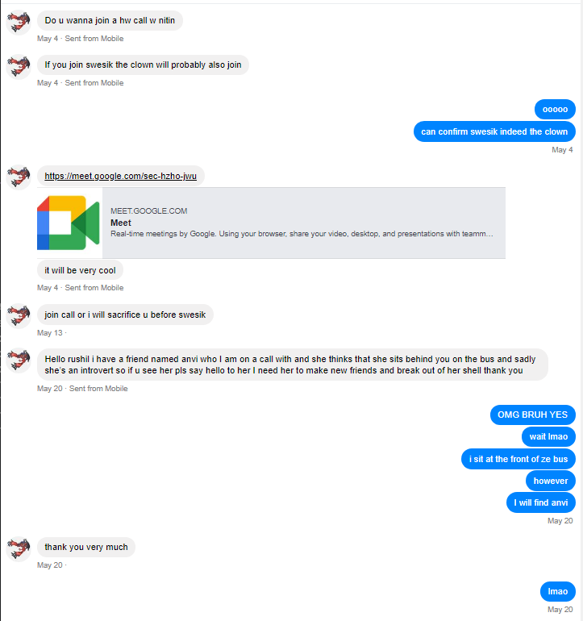

I walked into orchestra on the first day, and there she was, probably the first time ever seeing her with context, and I simply shrugged it off. She didn't even let me pick up my bass that very first day, and by then it was over. The next day I saw her again for just a little longer, but I had my eyes on another soul. As the first months passed, I was just getting back into the swing of things, but nobody could've prepared me for just how tough this year would be. Homecoming breathed down my neck, and I fell into a pretty deep hole. Grades in multi I ain't ever seen before, and a woman who only had enough emotional maturity for me to be nothing more her punching bag.
The issue is throughout it all, there was one person who I grew to bond with to such an extent. Honestly this was something I'd never really successfully managed. She invited me into her life, and the time that we spent together was magical. But, obviously, she was just a *really good* friend, right? There's no way this senior (who was also gay, mind you) was anywhere in my league. Unattainable. So when she hugged me, or held my hand, or ate lunch with me, or simply talked to me for the sake of me. It was something I felt, but couldn't put into words.
Until the night of the Vienesse ball.
When she invited me out to boba beforehand, I could barely hold in my excitement. An hour with just me and her? Outside of school? And boba? I couldn't ask for anything more. And you can imagine my reaction when Aleesha followed us outside. I felt selfish, I wanted her to myself. Now, I promise I'm not some psycho, I felt bad for my selfishness after we got back. But what happened at the ball broke the camel's last straw on its back (ion know the idiom lmao). She had PRE-ARRANGED to be in the same shifts as me, and I blew it! Absolutely threw. I made the one mistake that I wasn't supposed to, I played the wrong shift. And then I had to stand there for 45 minutes and stare at this beautiful woman as she just motioned at me, and there was nothing I could do.
It was that day that I was able to put words to the feelings I had: "Will you go out with me?" This phrase is one of the most polarized in the english dictionary, it could go both ways, and only both ways. Yes and No. And being the TJ student that I was, I deliberated for weeks. Weeks of hand holding, tight squeezes, and doing things that the homies simply do not. I was clueless, but this was my one chance at a clue, and I almost blew it.
It was lunchtime on that Monday, and I did the only thing I knew how to in high-stress situations: turned my brain completely off.
Hey, so how's it going with that crush?
I'M SCARING YOU ? AAAAAAAAAAAAAAAAAAAA Uhhhh, alright listen. You ready?
Will- uh. WILL YOU GO OUT WITH ME?
What? What do you mean yes?
The end.
(or just the start :))
P.S.:
Ramya, if you're reading this. I don't think I could even begin to put into words just how much I care about you. From your self-confidence to your compassion, every second I get to spend makes my day just that better. I love how much we make each other smile, or how much mutual respect we both have. The honor has been all mine getting to know you ever since last may, and speaking of last may:
Here's our first text exchange.
And here's the rest. PDF!